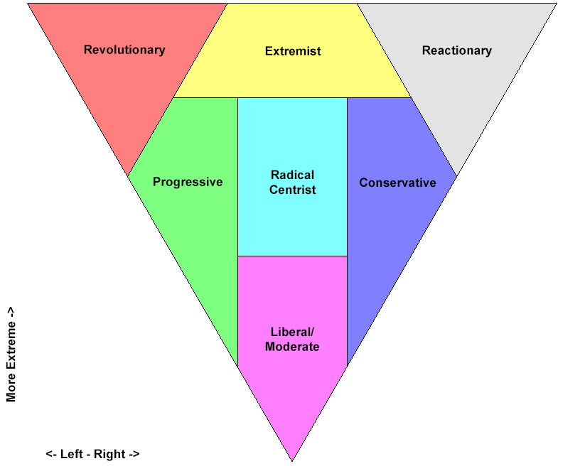

This test is still in development. Please send any critiques and criticisms to comments@whitehouse.gov
Saving the image does not work. You have to take a screenshot and crop the results.
Hi Der Server.